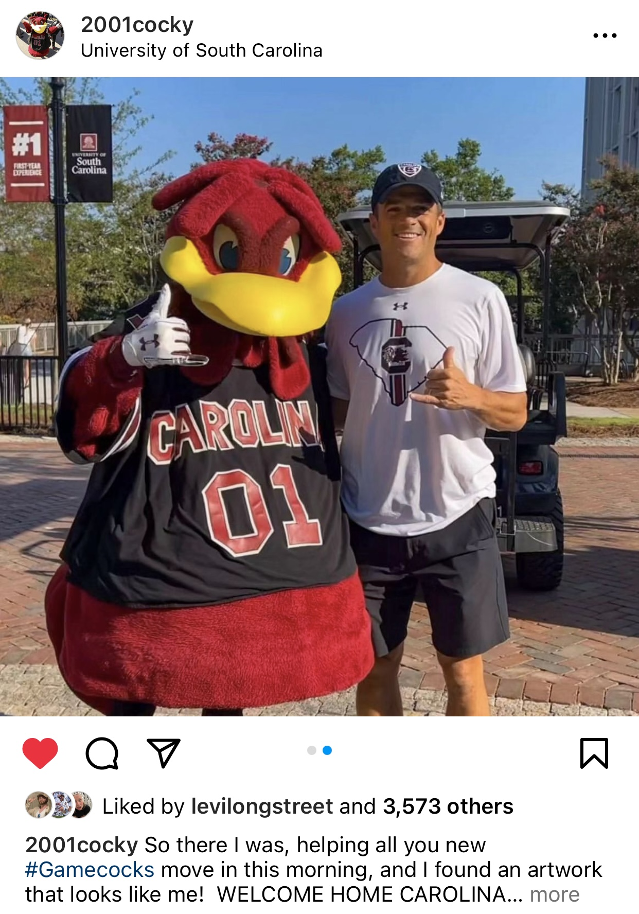
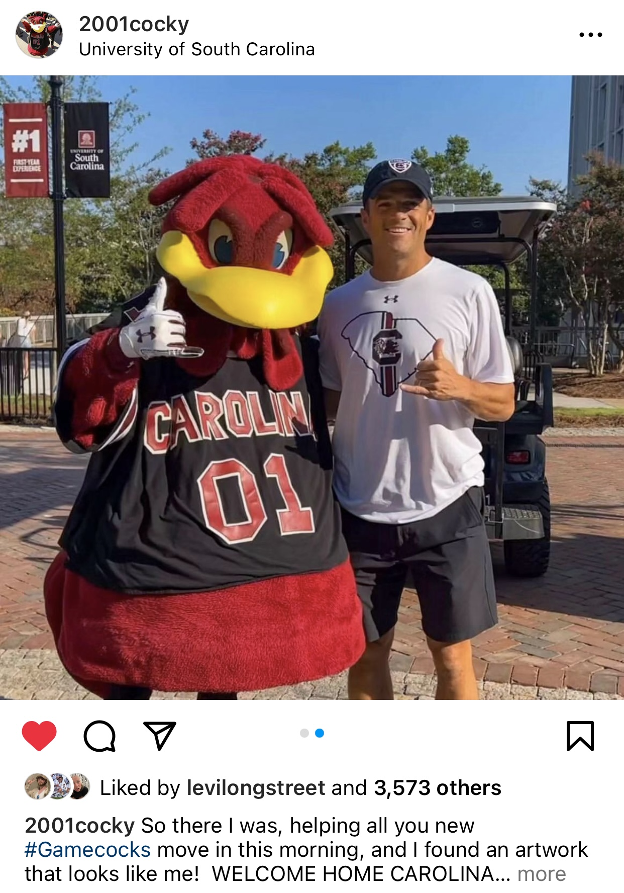

This is Cocky the Gamecock! He's our shining gamecock star! You can find him at every sporting event, every student entertainment event, and can be spotted walking around the horseshoe. In Cocky's free time, he makes tik tok videos, sips on a pumpkin spice latte from the new Lincoln Street Starbucks location, and works on his strategic plan to defeat the wicked Clemson Tiger in the Palmetto Bowl.
In addition, Cocky loves to study Computer Science with the other College of Engineering and Computing gamecocks. Sometimes, out of boredom and passion, he creates his own websites in HTML and CSS such as this one. This website could have been coded by Cocky himself! You would never know! He strives to become a better computer scientistt than all of the Tigers at Clemson University.
 

| September 2nd, 2023 | North Carolina @ UNC, 7:30 PM |
|---|---|
| September 9th, 2023 | Furman, 7:30 PM |
| September 16th, 2023 | Georgia @ UGA, 3:30 PM |